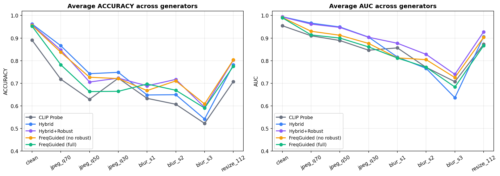
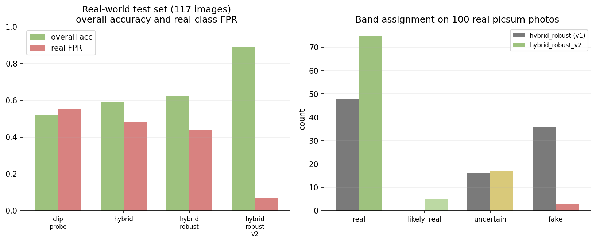

CLIP backbone stays frozen. Only the small DCT branch and fusion MLP train.
Five architectural variants share this skeleton.
Ablation
Five architectures, controlled comparison.
Cross-generator AUC on six unseen generators
CLIP linear probe
0.9553
AIDE Hybrid
0.9942
★ Hybrid + Robust Aug
0.9937
FreqGuided (no robust)
0.9910
FreqGuided (full)
0.9897
Adding the frequency branch is the largest gain
(+0.039 AUC).
Robustness
Survival under JPEG, blur, resize.
Same five models · 7 degradations × 6 generators.
CLIP linear probe
0.836
AIDE Hybrid
0.849
★ Hybrid + Robust Aug
0.884
FreqGuided (no robust)
0.852
FreqGuided (full)
0.830
⚠ Surprising negative finding.
FreqGuided (full) — fanciest architecture combined with augmentation —
is worse than the simple CLIP probe. Architectural bias + aggressive augmentation are not additive.
Deployment gap
A 96% benchmark detector calls 44% of smartphone photos AI.
Held-out · 100 picsum + 17 modern AI
44%
Real-photo false-positive rate
On a held-out set of casual smartphone photos — images with HDR tonemapping, sensor noise, Instagram-style colour grading —
the same model that scores 0.994 AUC on the benchmark falsely flags
44 of every 100 real photos as AI-generated.
The benchmark hides the gap because its "real" class is ImageNet-style, not smartphone-style.
The fix
SmartphoneAesthetic + 632 photos.
Augmentation widens the model's "real" coverage. Warm fine-tune for 3 epochs.
GenImage val AUC drift: 0.994 → 0.9935 — within noise. The fix doesn't sacrifice benchmark performance.
Visualised
Where each model breaks.
AUC across degradation severity, all five models overlaid.

Hybrid + Robust (purple) sustains the highest AUC across every degradation.
FreqGuided (full, blue) crashes hardest under blur — confirming the negative finding.
Improvement
v1 → v2, in one chart.

Left: overall accuracy + real-photo FPR per model. Right: verdict-band redistribution on 100 real picsum photos. v2 routes 75 to Real, 5 to Likely Real, 17 to Inconclusive — only 3 wrong AI calls (was 36).
Engineering decisions
What we tried and rejected.
🚫
Ensemble of all 5 heads
−1.5 points robust AUC. All heads share the frozen CLIP backbone — errors are correlated, no decorrelation benefit.
🚫
Test-time augmentation (h-flip)
+0.001 AUC for 2× inference cost. Below noise floor — model already has flip invariance from training augmentation.
✓
Temperature scaling
ECE drops 2-4×. Hybrid was overconfident at T=2.45 — a 0.99 confidence was actually a 0.75 honest probability. Deployed.
Product
Spectra · the web app.
FastAPI backend
POST /detect — single-image prediction
POST /detect/compare — all 5 research models
GET /dashboard/data — benchmark metrics
Lazy CLIP load, head models on demand
React frontend
Apple HIG: SF Pro, glass nav, 22 px corners
Light + dark adaptive (auto via prefers-color-scheme)
Apple curve cubic-bezier(0.32, 0.72, 0, 1)
Count-up percentage · gradient probability bar
Heatmap toggle + comparison slider
EXIF metadata · OOD score chip
Result
87%
AI-Generated
Synthesised by a generative model.
AuthenticAI-Generated
Confidence
High
OOD score
22%
Model
Spectra-X
Recap
Three contributions.
1
Five-model controlled ablation
Frequency branch is the largest gain (+0.039 AUC). Robustness aug is a Pareto improvement. Combined attention + aug actually hurts generalisation.
2
Quantified deployment gap + remediation
44% real-photo FPR on smartphones, hidden by GenImage benchmark. SmartphoneAesthetic + 632 picsum injection drops FPR to 7%.
3
Production-ready, honest interface
FastAPI + Apple-HIG React. Calibrated probabilities, OOD score, five-band verdict. Public-detector fallback for 2024+ generators we couldn't source data for.
Thank you
Questions?
Try Spectra at localhost:8001 —
drop any image and read its spectral signature.